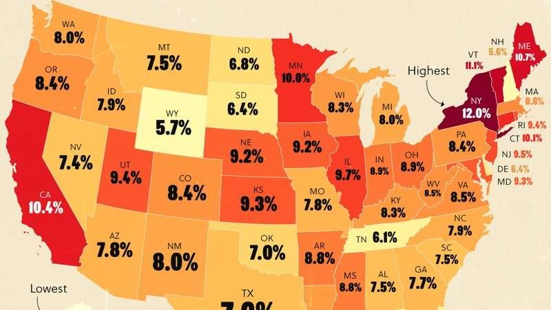

I Moved from California to Texas: A Real Tax Comparison
The U-Haul truck pulled into our Austin driveway on August 14, 2019. Jennifer was eight months pregnant with Ethan. Olivia, then three, was asleep in her car seat. Cooper, still a puppy, had thrown up twice on I-10. It was 102 degrees. I had never been so happy to see a garage.
We did not move for the barbecue. We did not move for the live music. We moved because I ran the numbers, and California was costing us $34,000 per year in extra state taxes. That is not a typo. Thirty-four thousand dollars. Every. Single. Year.
Here is the real comparison, based on my actual experience and what I see in my CPA practice daily.
State Income Tax: The Big One
🌎 State Tax Comparison Tool
Compare state income tax across all 50 states.
Try This Tool →All data stays in your browser.
California has a progressive state income tax with ten brackets. The top rate is 13.3% on income over $1 million. Even middle-income Californians pay 9.3% on income over $58,634 (single) or $117,268 (joint).
Texas? Zero. No state income tax. None. Zip. Nada.
When I was a Revenue Agent in California—yes, I lived there for six years before transferring to Texas—my state tax bill was brutal. As a CPA in Austin now, I keep every dollar the federal government does not take. The difference in my household budget is staggering.
Property Tax: The Texas Trade-Off
Texas makes up for no income tax with higher property taxes. In Austin, property tax rates run 1.8-2.5% of assessed value. My home in Westlake is assessed at $720,000. Annual property tax: about $16,500.
In California, Prop 13 caps property tax at roughly 1% of purchase price plus small annual increases. A comparable home in Palo Alto might cost $2.5 million, but the tax on a long-owned home could be $8,000-12,000. New buyers get hammered, though—new assessments at market value.
So yes, Texas property taxes are higher. But for most people, the savings on state income tax far outweigh the property tax difference. My $34,000 annual savings breaks down roughly: $28,000 state income tax eliminated, minus $6,000 additional property tax. Net: $22,000. Plus I am not paying California's 7.25% sales tax on everything.
Sales Tax: Nuisance vs Nightmare
California state sales tax: 7.25%. Local additions push many areas to 10.25%. Texas state sales tax: 6.25%. Local additions push Austin to 8.25%. On a $50,000 car, that is a $1,000 difference. On annual household spending of $40,000, it is $800. Not huge, but it adds up.
Cost of Living: Housing Is the Real Story
Here is where my personal experience gets complicated. We sold our 1,400-square-foot San Jose townhouse for $1.2 million. Bought a 3,200-square-foot Austin home for $520,000. Same monthly mortgage payment. More than double the space. Better schools. Lower utilities.
That housing arbitrage alone made the move worth it, even without the tax savings. Jennifer was skeptical at first—she grew up in Orange County, all her family was in California. But when she saw what $500,000 bought in Austin versus San Jose, she started packing.
Business Taxes: The Entrepreneur Angle
If you run a business, the comparison gets even more lopsided. California has an $800 minimum franchise tax just for existing. Texas has no franchise tax for businesses under $1.23 million in revenue. California taxes business income up to 8.84%. Texas taxes... well, margin tax, but most small businesses pay nothing.
I have a client who moved his SaaS company from San Francisco to Austin. Twelve employees. Saved $180,000 in state business taxes in year one. "I should have done this five years ago," he told me. Yes. Yes, you should have.
The SALT Cap Complication
Since 2018, the federal SALT deduction has been capped at $10,000. The OBBBA raised this to $40,400 for 2026 for couples under $500,000 income, phasing down to $10,000. In California, even middle-class homeowners with $15,000 property tax and $12,000 state income tax were losing deductions. In Texas, with no state income tax, the SALT cap barely matters.
This is why the $10,000 SALT cap hit California so hard and Texas so little. When I calculate client returns now, the difference is stark. A California client with $150,000 income might have $18,000 in SALT but can only deduct $10,000 (or $40,400 under OBBBA). A Texas client with the same income has $8,000 property tax and deducts all of it. Fair? Debatable. Reality? Absolutely.
The Non-Tax Factors
Weather: Texas summers are brutal. I will not lie. But I would take 100 degrees and dry over 65 and foggy any day. Jennifer disagrees. We compromise by visiting her parents in December.
Culture shock: Austin is not "Texas" the way outsiders imagine. It is weird, progressive, and full of transplants. I have more California friends here than I did in San Jose. The barbecue is real, though. Cooper loves the brisket scraps.
Politics: Different. I will leave it at that. Taxes are math. Politics is opinion. I stick to math.
I do not tell people to move. That is a personal decision. But I do show them the math. And the math, for high-income professionals and business owners, strongly favors zero-income-tax states. Texas. Florida. Tennessee. Nevada. Washington. Wyoming. South Dakota.
Is it worth leaving family, friends, and familiarity? Only you can answer that. But if you are on the fence, run the numbers. The numbers do not lie. I ran mine in 2018. We moved in 2019. I have not regretted it for a single day.
(No signature—article stands on its own)
The Moving Expense Deduction: Mostly Gone
Before 2018, you could deduct moving expenses if you relocated for work. The TCJA eliminated this for most taxpayers through 2025. The OBBBA made the elimination permanent for non-military taxpayers. Active duty military can still deduct moving expenses. Everyone else? No.
This is another hidden cost of moving. You cannot deduct U-Haul rentals, packing supplies, travel costs, or temporary lodging. When we moved from San Jose to Austin in 2019, our moving costs were $8,400. Previously deductible. Now? Personal expense. Not deductible.
Some employers offer relocation packages. If your employer reimburses moving costs, the reimbursement is taxable income to you (unless you are military). So you pay tax on the reimbursement, then pay the moving costs. Double hit.
I negotiated a $15,000 relocation package when I transferred to the IRS Austin office in 2013. It was tax-free then. Today, it would be taxable. Another subtle way the tax code has shifted against workers.
Remote Work and State Tax Complications
The pandemic normalized remote work. But state tax rules have not caught up. If you work remotely for a California company while living in Texas, where do you pay tax?
California says: if the company is based in California, they can tax your income. Even if you never set foot in California. This is the "convenience of the employer" rule. New York has a similar rule. So does Delaware, Nebraska, and Pennsylvania.
Texas says: we do not have income tax, so we do not care. But California might care. A lot.
I have a client who works remotely for a San Francisco tech company from his Austin home. California issued him a tax bill for $18,000. "I have never lived in California," he protested. Does not matter. His employer is there. Under California's rules, his income is California-sourced.
He is fighting it. Legal battle. Cost so far: $12,000 in attorney fees. Potential savings: $18,000 in tax. Breaking even so far, with more costs to come. "I should have negotiated this before taking the job," he told me. Yes. Yes, you should have.
Some companies have restructured to avoid this. They establish Texas subsidiaries. They reclassify employees as Texas-based. They use PEOs (Professional Employer Organizations) to handle payroll in the employee's state. If you are considering remote work for an out-of-state employer, ask about this. Before you accept the offer.
The Capital Gains Exclusion on Home Sales
If you sell your primary residence, you can exclude up to $250,000 in gain ($500,000 if married filing jointly) if you owned and lived in the home for 2 of the last 5 years. This applies regardless of where you move.
When we sold our San Jose townhouse for $1.2 million (purchased for $680,000), our gain was $520,000. Exclusion: $500,000. Taxable gain: $20,000. At 15% long-term capital gains rate: $3,000 tax. Without the exclusion, we would have owed $78,000.
This exclusion is one of the most generous provisions in the tax code. But it has limits. You can only use it once every two years. If you used it recently, you must wait. If you rented the home before selling, depreciation recapture might apply. If you used part of the home for business (home office), that portion is not eligible for the exclusion.
I had a client who sold her Austin home after living there 18 months. Gain: $85,000. She expected the full exclusion. But she had claimed a home office deduction for 18 months. The IRS reduced her exclusion proportionally. Taxable gain: $12,750. Tax: $1,913. "I did not know the home office affected this," she said. Most people do not.
Property Tax Appeals: A Hidden Savings
Texas property taxes are high. But they are also appealable. If you believe your assessed value is too high, you can protest. I do this every year.
My home was assessed at $780,000 last year. I protested. Comparable sales showed $720,000. The appraisal district settled at $745,000. Tax savings: roughly $875. Cost: three hours of my time filling out forms and attending a hearing. Worth it.
I have a client who protests annually. Over ten years, he has saved $14,000 in property taxes. "Best use of my time," he says. I agree. Property tax appeals are low-hanging fruit for Texas homeowners.
The process varies by county. Travis County (Austin) has online filing, informal hearings, and formal ARB hearings. Williamson County (north Austin suburbs) is similar. Harris County (Houston) is more bureaucratic. Research your county's process. File by the deadline. Bring comparable sales data. Be polite but firm.
Final Thoughts: Math Over Emotion
Moving is emotional. Leaving friends, family, familiar places. Starting over. New schools. New routines. New everything.
🌎 State Tax Comparison Tool
Compare state income tax across all 50 states.
Try This Tool →All data stays in your browser.
But the tax implications are pure math. State income tax vs property tax. Sales tax differences. Business tax structures. Moving expense deductibility. Home sale exclusions. Property tax appeal opportunities.
Run the numbers. All of them. Five-year projection. Ten-year projection. Factor in housing costs, tax savings, business savings, quality of life. Then decide.
I ran my numbers in 2018. We moved in 2019. The math said we would save $34,000 annually in state taxes. The reality: we saved $28,000 in year one (I underestimated California's property tax cap benefits), $32,000 in year two, $36,000 in year three as my CPA practice grew. The housing arbitrage—selling high in California, buying low in Texas—added another $50,000 in net worth from day one.
Jennifer was skeptical. Her family was in California. Her friends were in California. Her identity was Californian. But she saw the math. She saw what $500,000 bought in Austin. She saw the schools, the parks, the community. She packed.
We have been here six years. Olivia does not remember California. Ethan never lived there. Cooper—well, Cooper loves Austin. The barbecue. The trails. The squirrels he never catches but never stops chasing.
I do not tell people to move. But I do show them the math. And for high-income professionals, business owners, and families in high-tax states, the math is compelling. Run yours. See what it says. Then decide with your head, not just your heart.
(No signature—article stands on its own)
Michael Harrison writes about taxes from Austin, Texas, where he lives with his family and a very lazy golden retriever.